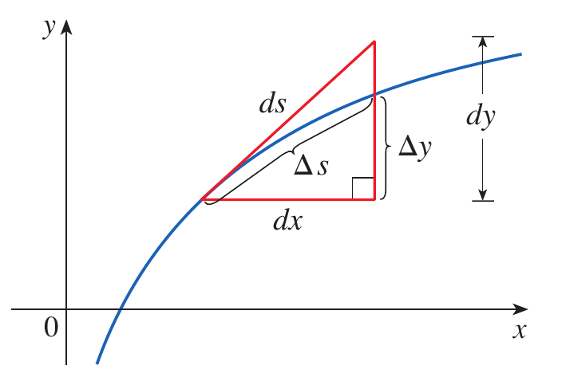
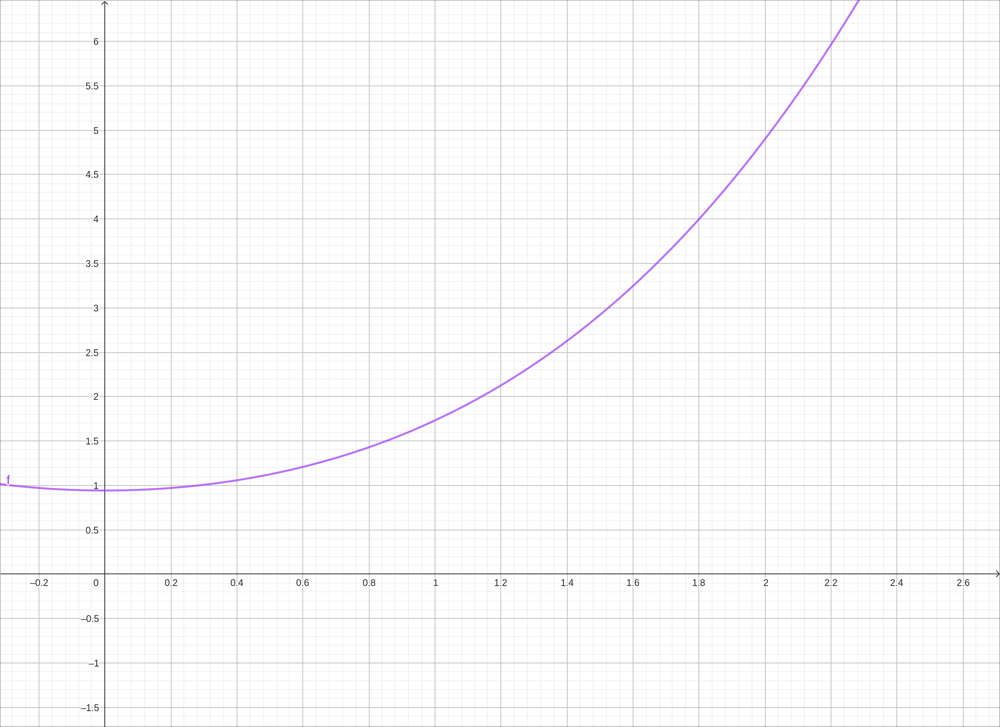
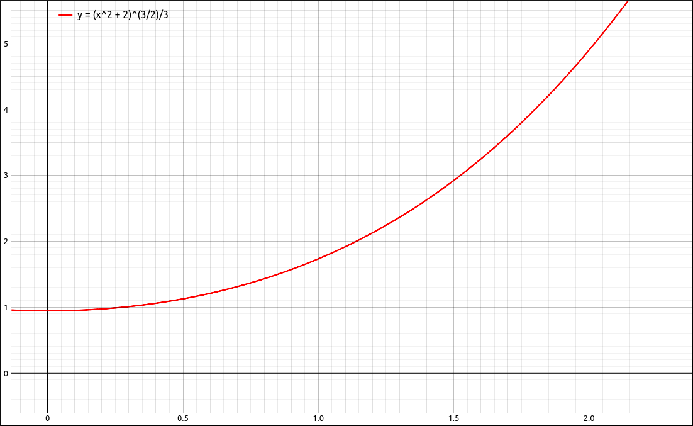

Arc Length of a Curve#
Discussion & Definitions#
The Arc Length Formulas#
Theorem: Arc Length for \(y = f(x)\)
Let \(f(x)\) be a smooth function over the interval \([a, b]\). Then the arc length of the portion of the graph of \(f(x)\) from the point \((a, f (a))\) to the point \((b, f(b))\) is given by
Note that the integrand of the arc-length integral can be fairly difficult to integrate. Many times we must rely on approximation techniques.
The calculation of the arc length is completely symmetric, so the formula for a function defined in terms of y is identical.
Theorem: Arc Length for \(x = f(y)\)
Let \(g(y)\) be a smooth function over the y-interval \([c, d]\). Then the arc length of the portion of the graph of \(g(y)\) from the point \((g(c), c)\) to the point \((g(d), d)\) is given by
We can write these formulas fairly compactly in Leibniz notation.
The Arc Length Function#
We can take the Leibniz notation formulation a little further and create an arc length function that will come in handy when we extend this to surface area.
Definition: The Arc Length Function
Define
Then by the Fundamental Theorem of Calculus Part 1 we get,
Using the Leibniz notation formulation and multiplying by \(dx\) gives,
and then squaring both sides gives a familiar formula,
and from this we also get,
A nice picture of the relationship between \(dx\), \(dy\), and \(ds\) is below.

Arc Length Function Visualization#
We can incorporate this into our arc length formula to get a vary concise statement.
Theorem: Arc Length
The arc length of a curve is
where we can use either formulation for \(ds\)
The only thing you need to be careful with is that the bounds of integration need to match the variable of integration. That is, if we use
then the bounds must be in terms of x, and if we use
then the bounds must be in terms of y.
Example: \(f(x) = \frac{\left(x^{2} + 2\right)^{\frac{3}{2}}}{3}\) on \([0, 2]\)#
GeoGebra#
Input the function,
(x^2 + 2)^(3/2)/3
Assume that the function came in as f, then form the arc-length integrand,
sqrt(1+(f'(x))^2)
Assume that came in as g, then integrate with Integral(g, 0, 2) and the result is 4.666667. An image of the curve is below.

\(f(x) = \frac{\left(x^{2} + 2\right)^{\frac{3}{2}}}{3}\)#
CLAE#
Input the function,
(x^2 + 2)^(3/2)/3
Take its derivative with Calculus > Derivative, variable x and order 1, the result is \(x \sqrt{x^{2} + 2}\). Assuming that the original expression came in as R1 and the derivative as R2, form the arc-length integrand,
sqrt(1+R2^2)
The result is, \(\sqrt{x^{2} \left(x^{2} + 2\right) + 1}\).
Now integrate with Calculus > Definite Integral, lower bound 0 and upper bound 2. Unfortunately the result is just,
which is a little disappointing, but if we approximate this expression we get, 4.66666666666667. We can get an exact answer if we help it along a little. Select the integrand expression then select Algebra > Factor this gives us \(\sqrt{\left(x^{2} + 1\right)^{2}}\). We know this is \(x^{2} + 1\) but since CLAE sees this as possibly complex it does not go that far. Select Algebra > Special Simplifications leave the settings as they are and click OK. This will result in \(x^{2} + 1\). Integrate this from 0 to 2 and we get an exact answer of \(\frac{14}{3}\).
An image of the curve is below.

\(f(x) = \frac{\left(x^{2} + 2\right)^{\frac{3}{2}}}{3}\)#
Maxima#
Input the function,
kill(all);
f(x):=(x^2 + 2)^(3/2)/3
Then set up the integrand and do the integration,
al:sqrt(1+diff(f(x),x)^2);
integrate(al, x, 0, 2);
The final result is 14/3.
Example: \(f(x) = \sin(x)\) on \([0, \pi]\)#
GeoGebra#
Input the function,
sin(x)
Assume that the function came in as f, then form the arc-length integrand,
sqrt(1+(f'(x))^2)
Assume that came in as g, then integrate with Integral(g, 0, pi) and the result is 3.8202.
CLAE#
Input the function,
sin(x)
Take its derivative with Calculus > Derivative, variable x and order 1, the result is \(\cos(x)\). Assuming that the original expression came in as R1 and the derivative as R2, form the arc-length integrand,
sqrt(1+R2^2)
The result is, \(\sqrt{\cos^{2}{\left(x \right)} + 1}\).
Now integrate with Calculus > Definite Integral, lower bound 0 and upper bound pi. The result is,
which is (this time) expected given the integrand. If we approximate this expression we get, 3.82019778902771.
Maxima#
Input the function,
kill(all);
f(x):=sin(x)
Then set up the integrand and do the integration,
al:sqrt(1+diff(f(x),x)^2);
integrate(al, x, 0, %pi);
The result is,
Again this is expected, change integrate to romberg to approximate the integral.
romberg(f,x,0,%pi);
The approximation is 3.820197867551791.